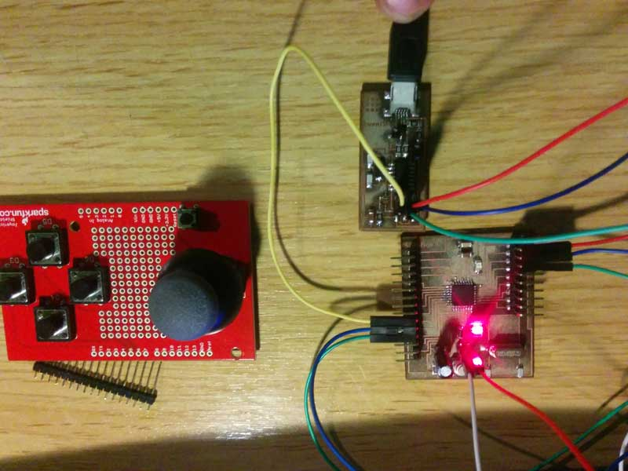

08.04.2015
For this assignment my friend Daniele Ingrassia, that do the Fab Academy with me in OpenDot lab, create a Fabkit derivate board with some improvement that I like so much and so I decided to make this board and use it for this assignment.
My intent is to move my final project also with a joupad like the professional CNC router, so I bought a Joypad shield to take components and I made the board with all the controller that I need. Programming the Satshakit is very easy, for the wiring this is the perfecly described GITHUB of the project. Initially I connected the FabISP by 6pin connector to uplad the bootloader and then with FTDI cable i can to read on the serial all the value pushed by the joypad poard. I don't paste all the serial communication beacuse the sketch send many signal per second but this is the sketch that I used
// Store the Arduino pin associated with each input
const byte PIN_BUTTON_SELECT = 2; // Select button is triggered when joystick is pressed
const byte PIN_BUTTON_RIGHT = 3;
const byte PIN_BUTTON_UP = 4;
const byte PIN_BUTTON_DOWN = 5;
const byte PIN_BUTTON_LEFT = 6;
const byte PIN_ANALOG_X = 0;
const byte PIN_ANALOG_Y = 1;
void setup() {
Serial.begin(9600);
// Specify each pin connected to a pushbutton as an input.
// Also enable the Arduino's internal "pull-up" resistors
// for each pushbutton we want to read--this means the shield
// doesn't need to have resistors on it.
// Note that when a pull-up resistor is used on a pin the
// meaning of the values read are reversed compared to their
// usual meanings:
// * HIGH = the button is not pressed
// * LOW = the button is pressed
pinMode(PIN_BUTTON_RIGHT, INPUT);
digitalWrite(PIN_BUTTON_RIGHT, HIGH);
pinMode(PIN_BUTTON_LEFT, INPUT);
digitalWrite(PIN_BUTTON_LEFT, HIGH);
pinMode(PIN_BUTTON_UP, INPUT);
digitalWrite(PIN_BUTTON_UP, HIGH);
pinMode(PIN_BUTTON_DOWN, INPUT);
digitalWrite(PIN_BUTTON_DOWN, HIGH);
pinMode(PIN_BUTTON_SELECT, INPUT);
digitalWrite(PIN_BUTTON_SELECT, HIGH);
}
void loop() {
// Print the current values of the inputs (joystick and
// buttons) to the console.
Serial.print("l:");
Serial.print(digitalRead(PIN_BUTTON_LEFT));
Serial.print(" ");
Serial.print("r:");
Serial.print(digitalRead(PIN_BUTTON_RIGHT));
Serial.print(" ");
Serial.print("u:");
Serial.print(digitalRead(PIN_BUTTON_UP));
Serial.print(" ");
Serial.print("d:");
Serial.print(digitalRead(PIN_BUTTON_DOWN));
Serial.print(" ");
Serial.print("x:");
Serial.print(analogRead(PIN_ANALOG_X));
Serial.print(" ");
Serial.print("y:");
Serial.print(analogRead(PIN_ANALOG_Y));
Serial.print(" ");
Serial.print("s:");
Serial.print(digitalRead(PIN_BUTTON_SELECT));
Serial.print(" ");
Serial.println();
}

The next implementation will be to recognize the endstop on the final project.